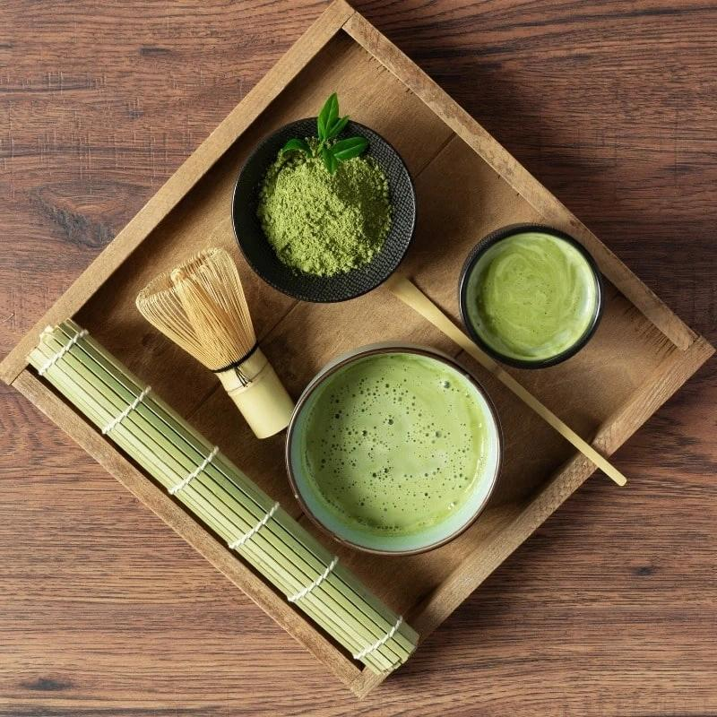
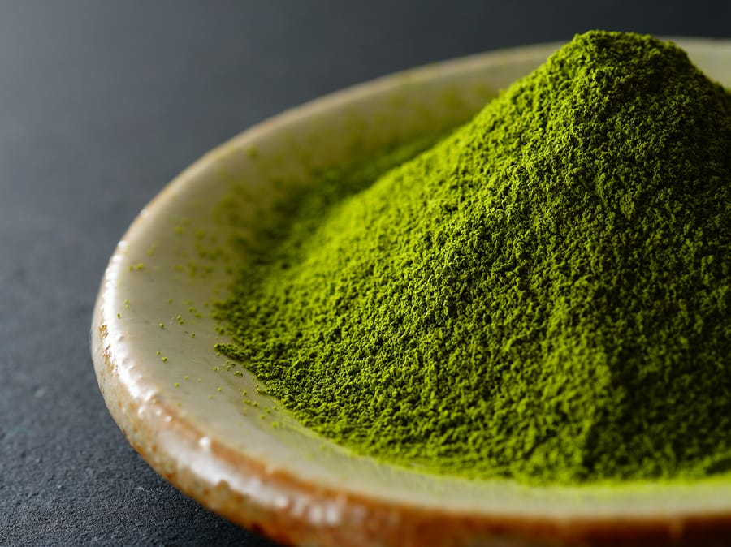
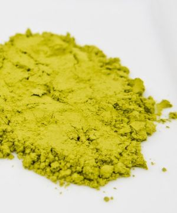
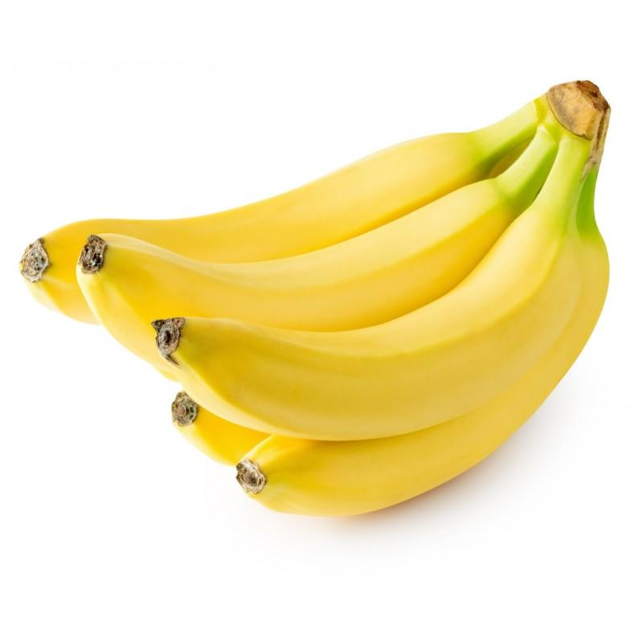
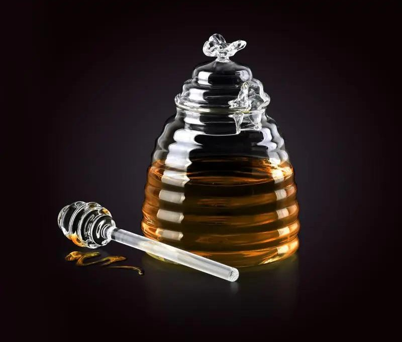
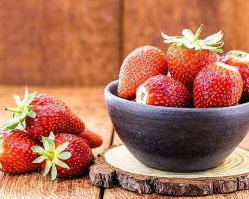

Zdrowy napój prosto z Japonii
Matcha to specjalny rodzaj zielonej herbaty pochodzący z Japonii. Liście są mielone na bardzo drobny proszek, dzięki czemu spożywamy cały liść herbaty, a nie tylko napar.

Najlepsza matcha pochodzi z Japonii. Powinna mieć intensywnie zielony kolor. Jest to znak, że liście były odpowiednio uprawiane i zbierane.

Jeżeli matcha jest wyblakła, żółtawa lub szara, najczęściej oznacza to niższą jakość. Smak może być wtedy bardziej gorzki.

Popularną marką wysokiej jakości jest Moya Matcha. W ofercie tej firmy znajdują się między innymi:
Matcha Codzienna dobrze sprawdza się do latte. Matcha Ceremonialna jest przeznaczona głównie do tradycyjnego przygotowywania z wodą. Matcha Luksusowa należy do najwyższej jakości i powstaje z bardzo starannie wyselekcjonowanych liści.
Badania naukowe pokazują, że zielona herbata i matcha zawierają dużą ilość przeciwutleniaczy, szczególnie katechin. Przeciwutleniacze pomagają chronić komórki organizmu przed stresem oksydacyjnym.
Matcha zawiera również kofeinę oraz L-teaninę. Połączenie tych substancji może pomagać w koncentracji i utrzymaniu uwagi podczas nauki.
Matcha jest także źródłem witamin i składników mineralnych. Nie jest jednak lekiem i nie zastępuje zdrowej diety. Wiele osób pije ją przed nauką lub treningiem, ponieważ daje energię na kilka godzin.
Niektóre badania sugerują, że białka zawarte w mleku krowim mogą ograniczać wchłanianie części przeciwutleniaczy obecnych w zielonej herbacie. Z tego powodu wiele osób wybiera mleko owsiane, migdałowe lub bez laktozy.


